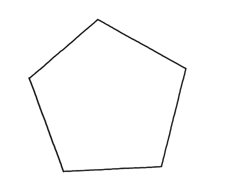
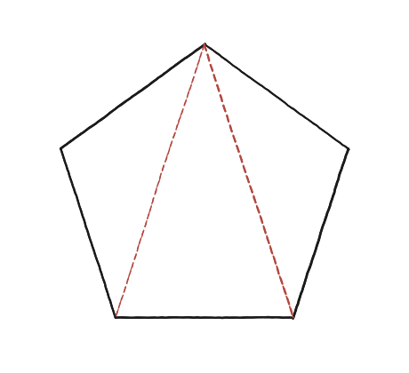
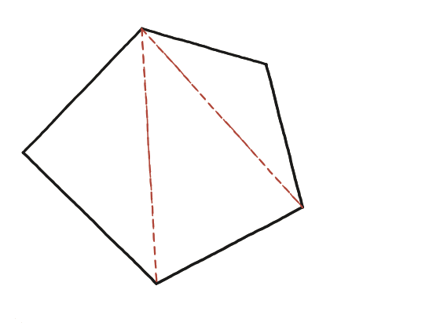

Quant sumen els angles interns d'un polígon?

Convertir el desconegut en l'únic que ja se sap
L'únic polígon del qual ja se'n sap la suma d'angles amb tota certesa és el triangle: 180°. Tota la demostració consisteix a convertir un polígon de n costats en un cert nombre de triangles, sense deixar-ne cap forat ni superposar-ne cap.
Casos petits, abans de generalitzar
Un quadrilàter (n=4): una diagonal el parteix en 2 triangles, suma 2×180°=360°. Un pentàgon (n=5): triant totes les diagonals des d'un sol vèrtex, en surten 3 triangles, suma 3×180°=540°.

Sense cap simetria de suport
El polígon amb què es generalitza el patró no és regular, expressament: l'argument no es pot recolzar en cap simetria, ha de valer per a qualsevol polígon convex —un polígon sense cap racó "entrant", on totes les diagonals des d'un vèrtex es queden dins la figura.

Comptar triangles en funció de n
Des d'un vèrtex d'un polígon de n costats hi caben n−3 diagonals (sense comptar els dos costats que ja hi surten). El recompte de triangles convé fer-lo a poc a poc, perquè és on es despista tothom: cada diagonal nova parteix en dos un dels trossos que ja hi havia, o sigui que n'afegeix exactament un. Sense cap diagonal hi ha una sola peça; amb una, 2; amb dues, 3. Amb n−3 diagonals, doncs, n−2 triangles. Multiplicant per 180°: suma = (n−2)×180°.
On s'atura aquesta demostració concreta
La fórmula (n−2)×180° és certa per a qualsevol polígon, convex o no —es pot comprovar mesurant. Però aquesta demostració concreta, la del ventall de diagonals des d'un sol vèrtex, només funciona per a polígons convexos: en un polígon amb un racó entrant, algunes de les diagonals que caldria traçar des del vèrtex de la punta interior se'n van fora de la figura, i el ventall ja no la parteix netament en triangles. Per a aquest cas cal un argument diferent (sempre hi ha alguna diagonal interior que el parteix en dos polígons més petits, repetint el procés). Que un argument no arribi a tot arreu no el fa dolent —el que seria dolent és no saber fins on arriba.
La suma dels angles interns d'un polígon de n costats és (n−2)×180°, de triangular-lo des d'un sol vèrtex en n−2 triangles. Aquesta demostració concreta val per a polígons convexos; per a polígons amb racons entrants la fórmula continua sent certa, però cal un argument diferent (partir per alguna diagonal interior i repetir), perquè el ventall des d'un sol vèrtex ja no serveix.
Comprovació
Hexàgon (n=6): 4 triangles, 720°. Polígon de 10 costats: 8 triangles, 1.440°. Fórmula general: (n−2)×180°.